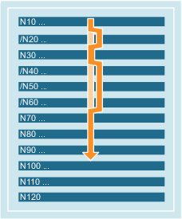

NC blocks, which are not to be executed every time the program runs, can be skipped and not processed. This function is used when testing and/or running-in new programs, for example.
Blocks to be skipped are indicated in the part program by the character "/" before the block number. Several consecutive blocks can also be skipped. The instructions in the skipped blocks are not executed and the program resumes with the next block that is not skipped.
Example:
| Program code | Comment |
|---|---|
| N10 … | ; Is executed |
| /N20 … | ; Skipped |
| N30 … | ; Is executed |
| /N40 … | ; Skipped |
| /N50 … | ; Skipped |
| /N60 … | ; Skipped |
| N70 … | ; Is executed |
| ... |
Blocks can be assigned to skip levels (max. 10), which can be activated via the user interface or the PLC user program.
The assignment is made in the NC program using a forward slash, followed by the number of the skip level. Only one skip level can be specified for each block.
Example:
| Program code | Comment |
|---|---|
| / ... | ; Block is skipped (1st skip level) |
| /0 ... | ; Block is skipped (1st skip level) |
| /1 N010... | ; Block is skipped (2nd skip level) |
| /2 N020... | ; Block is skipped (3rd skip level) |
| ... | |
| /7 N100... | ; Block is skipped (8th skip level) |
| /8 N080... | ; Block is skipped (9th skip level) |
| /9 N090... | ; Block is skipped (10th skip level) |
| Note |
The levels to be skipped can only be changed when the control system is in the STOP/reset state. |
| Note |
The number of skip levels that can be used depends on a display machine data. |
| Note |
Skipping blocks also remains active during block searches. |
| Note |
System and user variables can also be used in conditional jumps in order to control program execution. |
See also:
Blocks and block components